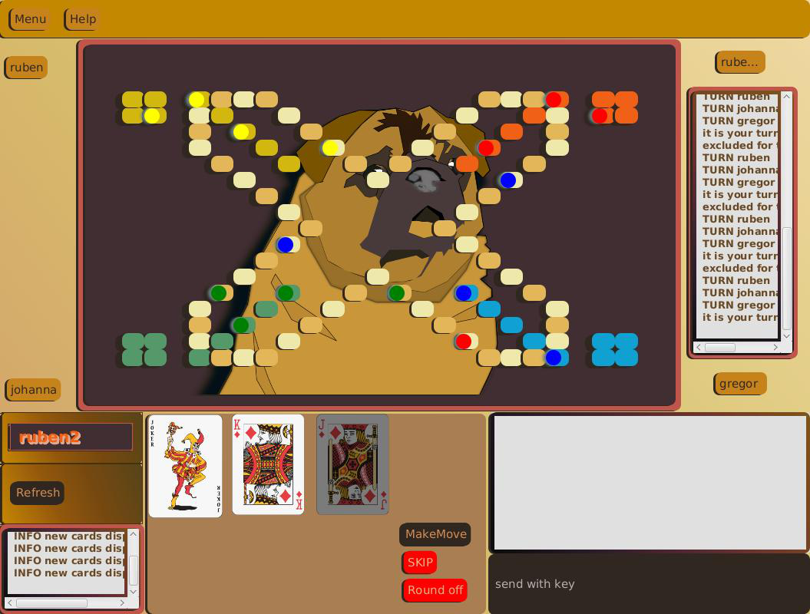

jDogs
Spannung, Taktik und Glück, das beste Team gewinntÄhnlich wie beim «Eile mit Weile» geht es darum, die eigenen Murmeln aus dem Zwinger zu nehmen und vom Start ins Ziel zu bringen. Es ist jedoch viel spannender, da nicht nur Glück, sondern vor allem Taktik und Strategie eine wichtige Rolle spielen.

Trailer
Entwickler:
- Johanna Meyer
- Gregor Bachmann
- Ruben Hutter
Steuerung:
Mouse: bewegenEnter: senden von Nachrichten